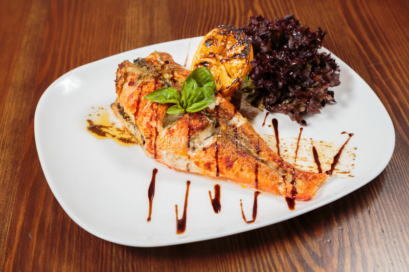

aux délices naturelles
Resto - afrik
Accueil
Crevettes sautées aux frites de pommes
Ce plat de crevettes est une spécialité des peuples de la côte du cameroun

Difficulté
Préparation
Cuisson
Temps total
facile
10 min
25 min
35 min
Ingrédients
Crevettes fraiches :150g
Tomates :50g
Oignons :10g
Pommes :100g
Préparation
Découper les pommes en fines lamelles
Faire cuire les pommes à l'huile dans une poele
Faire cuire les crevettes à la poêle
Mélanger la tomate aux oignons
Mélanger le tout dans la poêle des crevettes